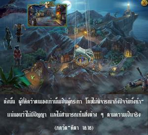

ดังนั้นผู้ที่คิดว่าตนเองเท่านั้นเป็นผู้กระทำโดยไม่พิจารณาถึงปัจจัยทั้งห้า แน่นอนว่าไม่มีปัญญา และไม่สามารถเห็นสิ่งต่างๆตามความเป็นจริง

คนโง่ไม่สามารถเข้าใจว่าองค์อภิวิญญาณทรงประทับในฐานะที่ทรงเป็นพระสหายอยู่ภายใน และทรงดำเนินกิจกรรมต่างๆ ของเขา ถึงแม้จะมีสาเหตุทางวัตถุ เช่น สถานที่ ผู้ปฏิบัติ ความพยายาม และประสาทสัมผัส แต่สาเหตุสุดท้ายคือบุคลิกภาพสูงสุดแห่งพระเจ้า ฉะนั้น เราไม่ควรเพียงแต่เห็นสาเหตุสี่ประการทางวัตถุเท่านั้น แต่ควรเห็นสาเหตุที่มีศักยภาพสูงสุดด้วย ผู้ที่ไม่เห็นองค์ภควานฺคิดว่าตนเองเป็นผู้กระทำ